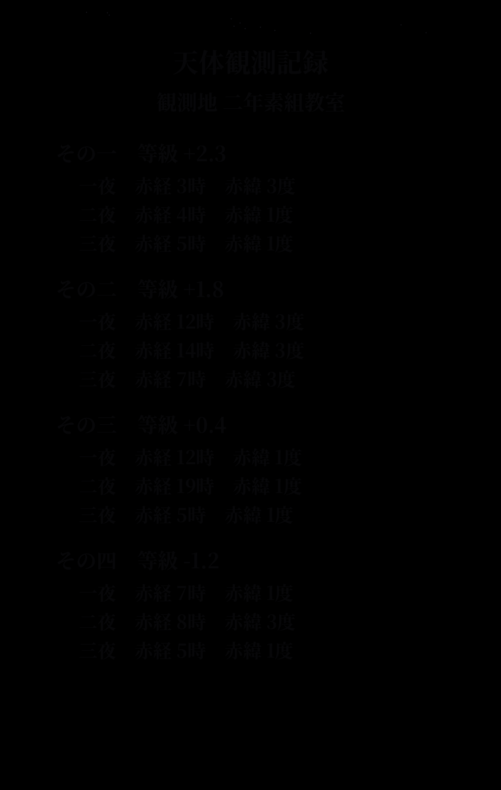

時間の定めはない。好きな時限から解いてよい。
全課程を修了した者のみ、帰りの会に出席できる。
招謎状を手に取れ。
心得と座席、あわせて読むこと。
本日の補講内容を答えよ。
問 ―― 次の詩を読み、問いに答えよ。
ほんこあいだにひそま、もこがたしこつづきをみもる。それはらにか。
窓の外は、まだ夜。
今宵、最も明るく輝いた星の名を答えよ。
観測の心得 ―― 暗き夜空に星を捉えるには、露光を伸ばすべし。
肉眼で睨んでも詮なし。写真に収め、明るさを上げてあらためよ。

掲示 ―― 英語部 連絡網
見本(部の名)
連絡先
この番号では、どこにもつながらない。
見本にならって順に読み解き、そこに書かれた問いに答えよ。
歌唱テスト ―― 課題曲『？？？』
ハ長調で。五十の音を、心して歌うこと。
課題曲の名を答えよ。
購買部 品書(税込)
貼り紙 ――「本日のおすすめ、はじめました。」
足元に、落とし物のレシート ―― にじんで読めない行がある。
本日のおすすめを答えよ。
資料 ――『日本のあゆみ』(古い写本の断片)
古き資料は、写しを取ってあらためよ。
準備運動 ――
一、しんこきゅう
二、くびをまわす
三、からだを よこに たおす
四、もとにもどす
百メートル走 ―― 本日の記録(順不同)
※負傷者一名、保健室へ。
そうじ当番の心得 ――
一、つくえを ならべる
二、こくばんを けす
三、でんきを けして かえる
戸締まりの錠は、四つの数。
よく学んだ。今日の答えを、すべてこの欄に(カナで)。
日直の書き置き ――
「けふ、いちども よばれざりし おとたち あり。
さがせども みつからず。そろへて よびて、かへるべし。」
―― この時限の問題用紙は、まだ配られていない。
見事である。だが考査は始まったばかり。
これまでの答えはすべて控えておけ。後に問われる。
二日目 ―― 開講準備中。追って通知する。